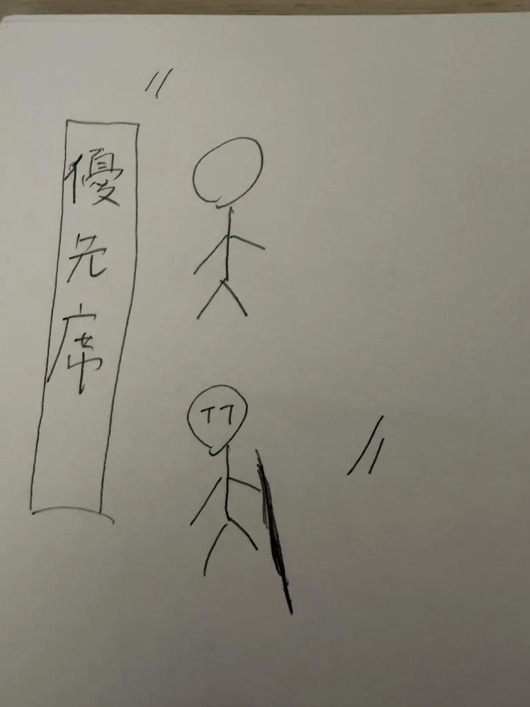
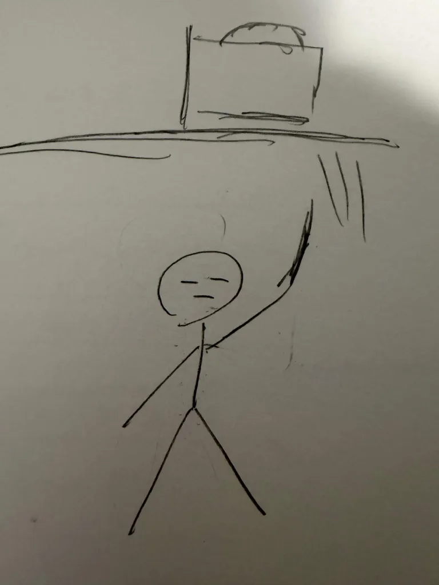
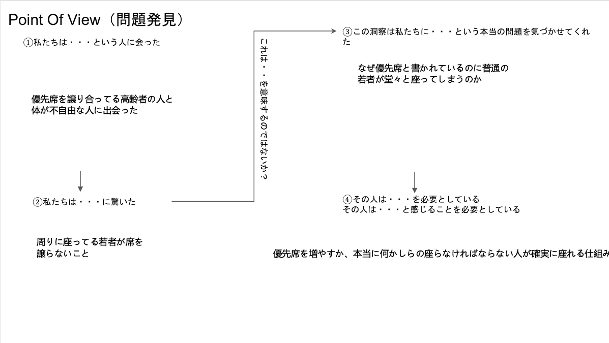
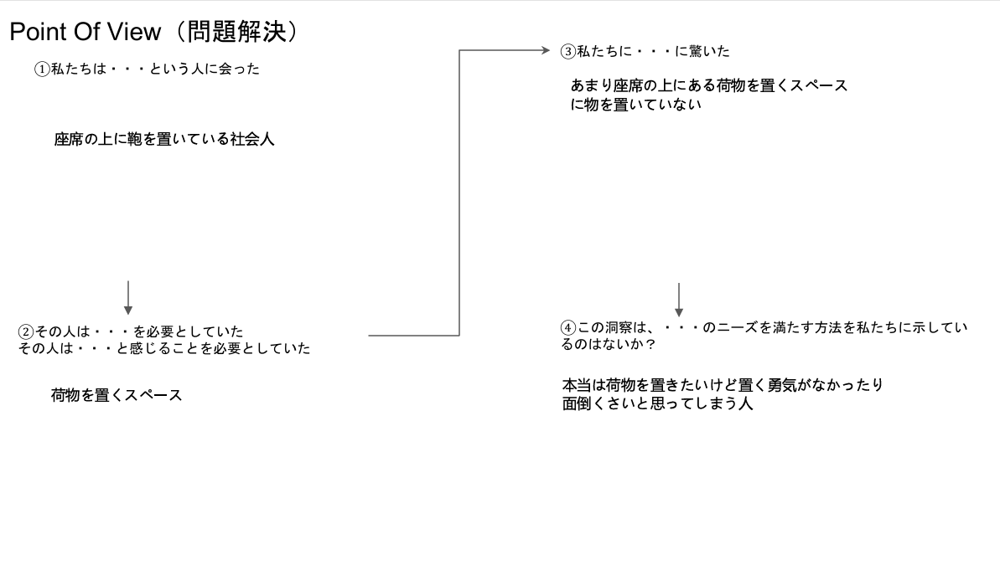

OBSERVATION 01
優先席を譲り合う人たち
高齢者の人と体が不自由な人が、優先席を譲り合っていました。
観察から、気づきをかたちに。
身近な人の行動を観察し、その人が本当に必要としていることを考えました。
記録を見る ↓01 / OBSERVATION
日常の中で気になった場面をスケッチに残しました。

高齢者の人と体が不自由な人が、優先席を譲り合っていました。

会社で使っているような鞄を、座席の上のスペースに置いていました。
02 / POINT OF VIEW
観察した出来事から、行動の背景にある気持ちや課題を考えました。

